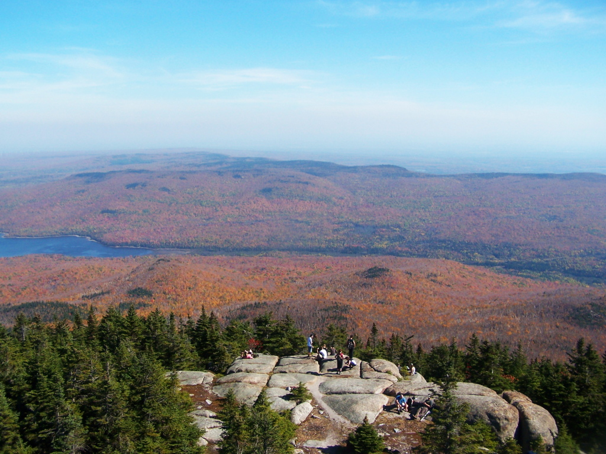
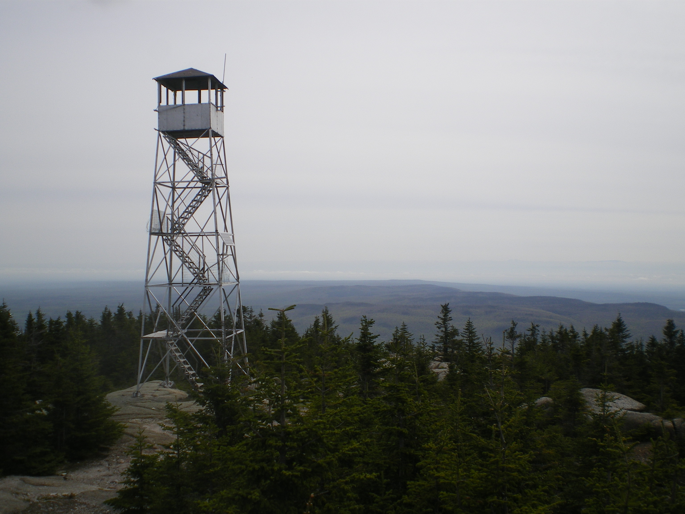
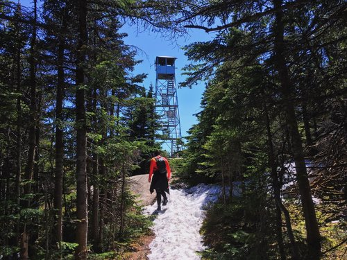
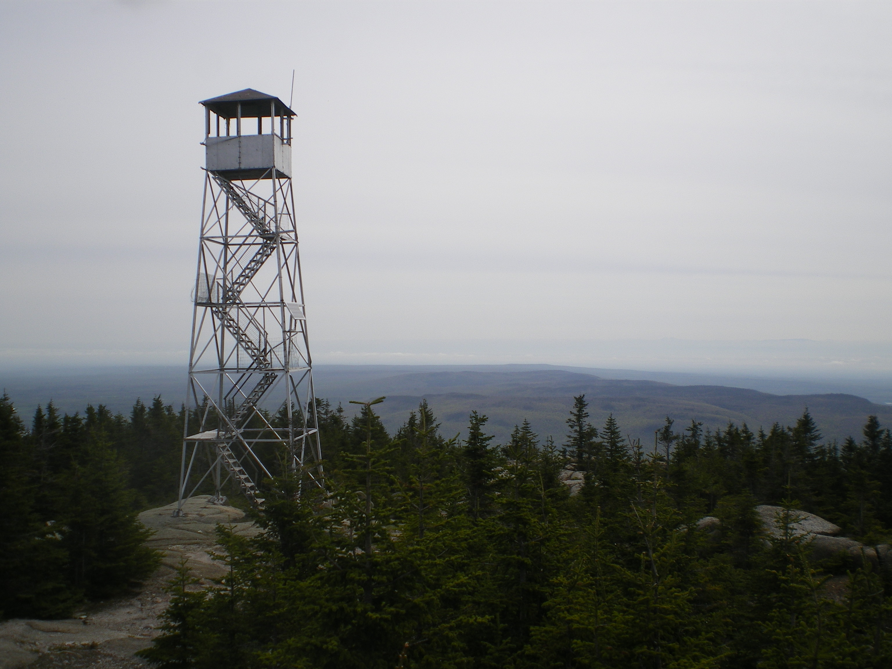
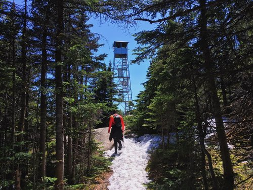
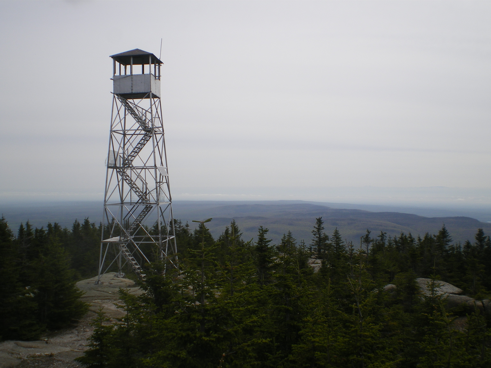
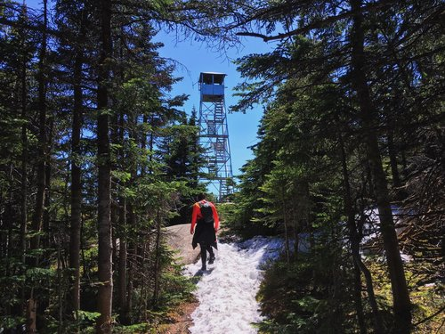

Lyon mountain fire tower trail
Du haut de ses 1167 mètres, Lyon Mountain est la plus haute montagne au nord de l'état de New York. Située à seulement 130 kilomètres de Montréal, elle devient par le fait même une destination de prédilection pour tous randonneurs désirant effectuer une superbe randonnée sans devoir à se déplacer vers la région des High Peaks. En fait, Lyon Mountain a beaucoup à offrir et représente bien plus qu'une alternative aux plus hauts sommets des Adirondacks.

 




